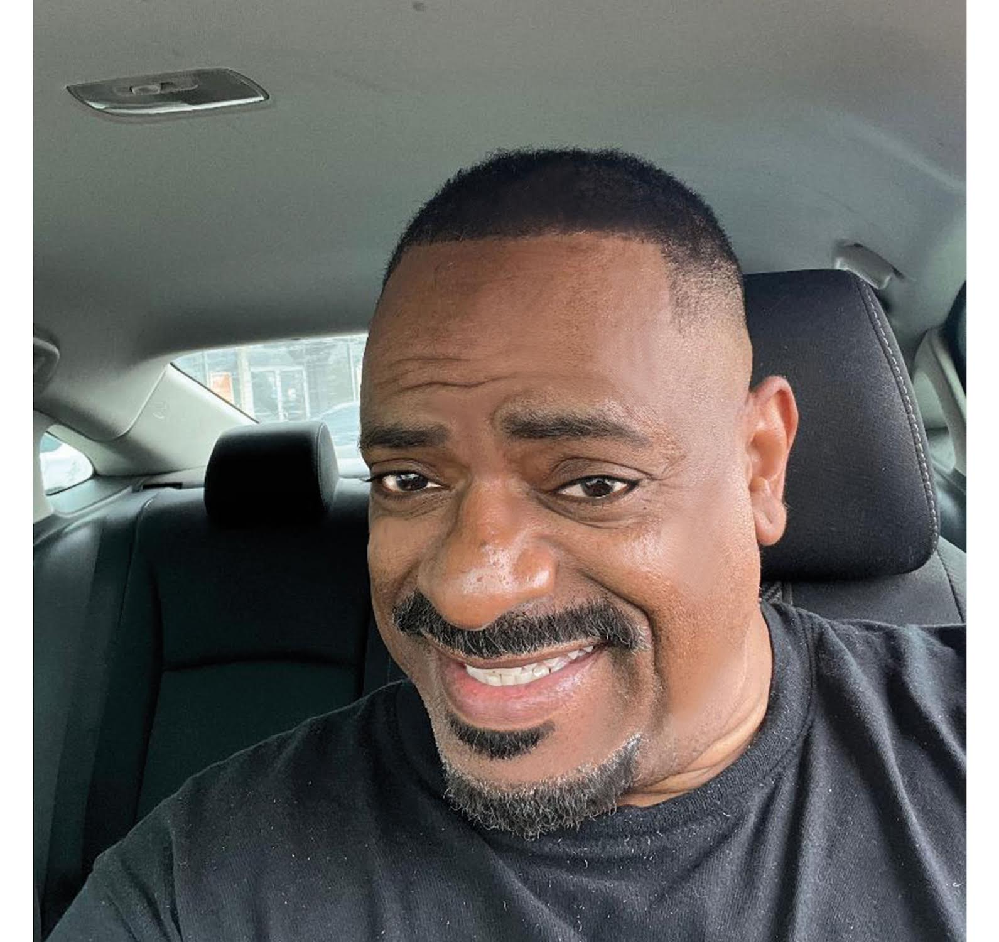

Meet Rory Jenkins
An Artist’s Eye. A Designer’s Mind.
I’m a visual designer with over 20 years of experience bringing ideas to life through bold, distinctive design. My work combines graphic design, print production, portrait art and fine art, blending creative vision with technical expertise to create work that informs, inspires and connects.
From brand identity and publication design to expressive illustration and portrait work, I approach every project with a focus on creativity, craftsmanship and purpose. I believe design is more than visual appeal. It’s a powerful way to tell stories, celebrate culture and create meaningful experiences.
I have completed professional certifications in Graphic Design, Portrait Art and Product Design, gaining strong expertise in creative concepts, visual storytelling and design execution.

What I do
- Graphic design and production design
- Publication and editorial design
- Brand identity and logos
- Commissioned fine art and custom portraits
- Visual presentations
- Video editing
Let’s create something extraordinary.
Available for graphic design, publications, commissioned fine art and custom portraits. Tell me about your project and I’ll get back to you.
Start a project Call 469.554.6258